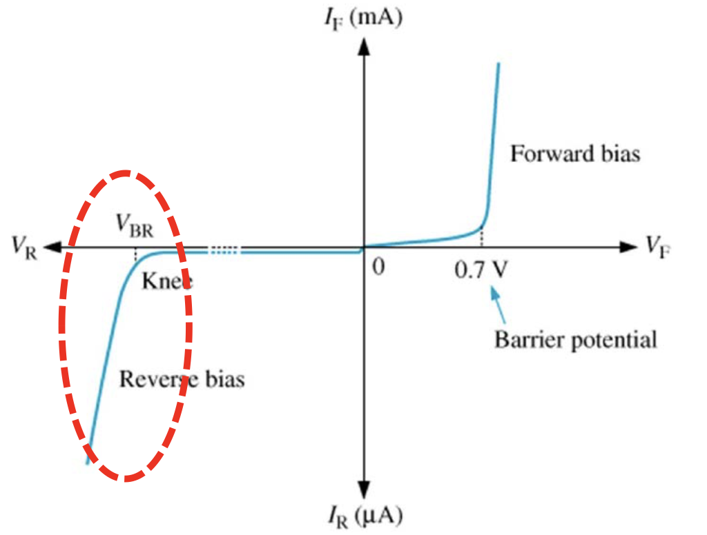

충남대학교 컴퓨터공학과 남병규 교수님의 "전자회로" 강의를 필기한 내용입니다.
이 문서는 보관이 목적이고, 관리되지 않습니다. 따라서 잘못된 정보가 포함되어 있거나 순서가 뒤죽박죽일 수 있습니다.
Majority, Minority Carrier
- 주된 전류 매개체가 뭐냐에 따라 나눠진다

- P도핑에서는 정공이 메이저가 되고 전자가 마이너가 되는거고
- N도핑에서는 전자가 메이저가 되고 정공이 마이너가 되는 것이다
PN Junction
- PN Junction, 또는 다이오드(Diode) 은 P-도핑의 실리콘과 N-도핑의 실리콘을 접합시켜놓은 것
- 전류는 ( N <- P ) 방향으로 흐르고 P도핑인 쪽을 Anode, N도핑인 쪽을 Cathode 라고 한다
이렇게 P와 N을 접합시켜놓으면 무슨일이 일어나느냐
- 처음에는 Diffuse 현상이 일어난다
- P는 정공이 많고 N은 적으므로 정공이 N쪽으로 움직이고
- 반대로 N쪽은 전자가 많고 P쪽은 적으므로 P쪽으로 밀도차에 의해 흘러가게 된다
- 하지만 이렇게 정공과 전자가 흘러가면
- P도핑의 접합부 근처는 정공이 다 N도핑쪽으로 도망가 음이온들이 많아지게 되고
- N도핑의 접합부 근처에는 전자들이 P도핑쪽으로 도망가 양이온들이 많아지게 된다
- 이렇게 이온화가 되면 더이상 전기적 중성이 아니기 때문에 양극을 갖는 N도핑쪽 접합부 → 음극을 갖는 P도핑쪽 접합부 방향으로 자기장이 흘러 더 이상 전자와 정공이 흘러들어오지 못하도록 힘을 가한다
- 즉, 이 자기장은 이온들 밀도차이에 의한 전압차에 의해 발생하게 된다 - 이것을 붙박이 전압(Buit-in potential) 이라고 하는 것
- 잉크물같은 경우에는 한놈이 도망가고 나면 그 옆에있던 놈이 그자리로 와서 채워지고 또 그자리를 옆에놈이 채워지고 하는 식으로 밀도가 동일해질때까지 확산이 일어나지만
- 얘의 경우에는 도망가고 채워지고 하는 작업이 어느정도 수준에 다다르면 붙박이 전압이 걸리기 때문에 도망간 자리를 채우지 못하는 현상이 일어남
- 실리콘의 경우에는 이 built-in potential이 0.7V정도 걸린다고 한다
- 이렇게 접합부 양쪽으로 이온이 가득해 진 층을 공핍층이라고 한다 - 이곳에는 전자나 정공이 있는게 아니라 이온들만 가득하기 때문에 캐리어가 부족하다는 의미
공핍층의 형성을 Energy band의 관점에서 바라보기

- 접합전에는 N타입에는 전자가 많기 때문에 Fermi level인 Ef가 높게 형성되어 있다. 반대로 P타입에는 전자가 적기 때문에 Ef가 낮게 형성되어 있는 것 이다.
- 근데 이제 접합을 시키면 접합부 주변의 N타입의 전자들이 P로 흘러가며 N타입의 접합부 주변의 전자가 적어져 Ef가 점점 낮아진다
- 그리고 P타입의 접합부는 전자들이 점점 많아지기 때문에 Ef가 점점 높아지게 된다
- 그러다가 Ef가 같아지는 시점이 되면 더 이상 붙박이 전압때문에 전자, 정공이 이동하지 못하고 공핍층(SCR)이 생기며 유지되게 되는 것
- 여기서 주목할 점은 Ef가 움직이면서 Ec와 Ev가 어떻게 변화하냐는 것이다
- Ef의 변화에 따라 Ec와 Ev도 동일하게 움직이게 되는데
- Ec와 Ev는 P와N이 접합된 이상 끊어지지 않기 때문에 Ef가 변화하면서 접합부 주변이 휘어지면서 언덕이 만들어지게 된다
- 접합한 당시에는 두번째 그림처럼 Ec와 Ev가 평평하게 나타나지만
- 점점 전자와 정공이 이동하며 P타입의 Ef가 올라감과 함께 Ec, Ev도 올라가고
- 반대로 N타입의 Ec, Ev는 떨어진다
- 그렇게 되면서 첨에는 평평하다가 Ef가 변화함에 따라 점점점 휘어지며
- 전자, 정공의 이동이 끝나면 저렇게 크게 휘어지게 되며 휘어진 공간에는 캐리어가 존재하지 않기 때문에 저 구간이 공핍층이 되는 것
- 즉, 접합 초기에는 휘어진 구간이 작아 공핍층이 작게 형성되는 반면 Ef가 움직임에 따라 점점 많이 휘며 휘어진 구간도 넓어져 공핍층이 넓게 형성되는 것
- 저 그림을 좀 생각해보면 전자들은 저 언덕을 넘어가지 못한다
- 전자가 에너지를 받아야 더 높은 에너지 준위로 올라가는데 지금은 어떠한 외부 에너지도 가해지지 않고 있으므로
- 정공의 움직임은 전자들의 움직임에 의해 일어나는 상대적인 움직임인 것을 고려해 보면 Ev의 언덕부분의 전자들이 더 올라와 정공을 메꿔줘야 정공이 아래로 움직일 수 있는데 언덕부분의 전자들이 올라오지 못하므로 정공도 아래로 내려갈 수 없는 것이라고 이해하면 된다
순방향으로 전압을 걸었을 때
- N타입에 음극, P타입에 양극의 전압을 거는 것을 순방향 전압(Forward bias) 을 건다고 한다
- 전압을 걸기 전까지는 전자들이 저 붙박이 전압때문에 밀려나 공핍층을 넘어가지 못했다면, 붙박이 전압보다 높은 전압을 걸어주게 되면 저 공핍층을 넘어갈 힘을 가지게 되어 전자들이 다시 넘어가기 시작한다
- 마찬가지로 정공들도 붙박이 전압보다 큰 전압이 가해지면 공핍층을 넘어서 넘어가게 된다
- 그럼 P타입에는 N타입에서 넘어온 전자들이 점점 많아져 Ef가 점점 높아지고
- N타입에는 P타입에서 넘어온 정공들이 점점 많아져 Ef가 점점 낮아진다
- 이것은 붙박이 전압보다 더 센 전압을 걸어주게 되면 걸어준 전압에서 붙박이 전압을 뺀 만큼의 전압이 순향향으로 걸리므로 전자, 정공이 다시 이동하기 시작하고 전자와 정공이 이동함에 따라 Ef가 점차 변화하며 공핍층이 없어져 걸어준 전압만큼의 전압이 전자, 정공에게 그대로 걸리는 것으로 생각할 수도 있다

- 따라서 위 그림처럼 Ef가 변화하고 그에 따라 두 타입의 Ec, Ev간 언덕이 없어져 전자들이 흐르게 되는 것
- 얘는 이렇게도 생각할 수 있다 - N타입쪽은 전자가 들어와 양이온쪽에 채워지고 P타입은 정공이 들어와 음이온에 채워지므로 공핍층이 사라져 전류가 흐르게 되는 것
다이오드에서의 소수 캐리어

- 위 그래프는 다이오드에서 소수 캐리어의 밀도를 나타낸다
- 즉, 빨간색은 N타입에서의 소수 캐리어 이므로 정공의 밀도를 나타내고
- 파란색은 P타입에서의 소수 캐리어이므로 전자의 밀도를 나타낸다
- 보면 넘어간 다음에는
e^(qV/KT)의 수식을 따라 감소하게 되는것을 알 수 있다- 왜냐면 소수 캐리어는 말 그대로 소수이기 때문에 각각의 타입에서 환영받지 못하기 때문에 감소하게 되는 것이다
- 그리고 여기서 q, K, T는 상수에 가깝다. 즉, 공핍층으로부터 멀어질 수록 전압에 지수적으로 밀도가 감소하게 되는 것
다이오드내부에서 전류를 운반하는 캐리어

- 다이오드도 하나의 경로기 때문에 여기에 걸리는 총 전류는 일정하다(초록색)
- 그리고 전자와 정공 모두 전류를 흘리는데 일조하기 때문에 이 전자와 정공의 밀도 또한 얘네들에 의해 흘려지는 전류와 연관이 있다
- 즉, 실선에 해당하는 소수 캐리어에 의한 전류는 위에서 본 소수 캐리어의 밀도와 동일한 양상을 취한다 - 공핍층에서 멀어질수록 전압에 지수적으로 감소하게 되는 것
- 근데 총 전류는 일정하므로 (총 전류 - 소수 캐리어에 의한 전류)를 통해 점선에 해당하는 부분인 주류 캐리어에 의한 전류 를 구할 수 있는 것
- 즉, N타입 에서 정공에 의해 흐르는 전류(실선)가 거리에 따라 점점 감소하는데 총 전류는 일정하므로 정공 대신 전자에 의한 전류는 점점 증가해야되고 이건 P타입에서도 반대로 마찬가지가 된다
- 노란색 부분인 공핍층은 캐리어의 밀도가 변하지 않기 때문에 해당 캐리어의 밀도변화에 의한 전류의 변화가 없다 - 따라서 수평하게 나오게 되는 것
- 따라서 저런 그래프가 나오게 되는 것
역방향으로 전압을 걸었을 때
- 반대로 P타입에 음극, N타입에 양극을 거는 것을 역방향 전압(Reverse bias) 이라고 한다
- 역방향 전압이 걸리면 전류가 통하지 않는다. 그 이유는
- P타입에 음극이 걸리므로 정공들이 접점으로부터 멀어져 접점부에 음전하가 더 많이 생기는 효과가 생기고
- N타입에는 양극이 걸리므로 전자들 또한 접점으로부터 멀어져 접점부에 양전하가 더 많아지는 효과가 생기는 것
- 따라서 공핍층이 더 두꺼워지는 효과가 생겨 공핍층 이온에 따른 전기장이 더 세어져(즉, 붙박이 전압이 더 세어져)전류가 흐르기 어려워 지는 것이다
- 다르게 생각해보면 역방향의 전압을 건다는 것은 공핍층에 생긴 붙박이 전압과 같은 방향으로 전압을 거는 것 이기 때문에 더욱이 전류가 흐르기 어려워진다라고도 할 수 있다

- 에너지 밴드의 관점에서 이해해보면 N타입에 양극을 걸어주면 전자들이 양극으로 빠져나가기 때문에 전자의 숫자가 적어져 Efn가 더 내려가고
- P타입에 음극을 걸어주면 P타입에 전자가 많아지므로 Efp는 더 올라가게 된다
- 따라서 접합부의 Ec, Ev간 격차가 더 심해져 저렇게 더 높은 언덕이 생기게 되는 것
소수 캐리어의 농도

- 보면 왼쪽이 N타입(양극), 오른쪽이 P타입(음극)이고 저 Xp는 정공의 농도가 없어지는 지점, Xn은 전자의 농도가 없어지는 시점이다
- N타입의 양극으로부터 주입된 정공은 어느정도까지는 무난하게 접근하다가 강한 붙박이 전압(급한 기울기의 언덕)에 의해 P타입으로 빠른속도로 끌려가게 된다(왼쪽 그림의 N → P방향으로 이동하는 정공의 모습) - 따라서 오른쪽 그림처럼 N타입의 양극으로 주입된 정공이 한동안은 일정한 밀도를 유지하다가 P타입으로 빨려들어가는 정공이 생기는 시점부터 밀도가 줄어들고 0이되는 지점에서 공핍층이 시작되는 것
- P타입에서도 마찬가지의 현상이 벌어져 공핍층에 가까워질 수록 전자의 농도가 줄어들다가 0이 되면 공핍층이 시작되게 되는 것
- 다만 이렇게 전자와 정공이 반대편으로 끌려갔다고 해서 전류가 흐르지는 않는다 - 끌려간 전자와 정공은 반대편에서 이온에 포섭되게 되어 반대편의 전극으로 가지는 않는 것
역방항 전압을 걸어줄때 흐르는 미세전류
- 역방향 전압을 걸어줬을때 전류가 흘러야 하지 않음에도 불구하고공핍층 부근에서 생성된 전자, 정공 쌍은 약간의 전류를 흐르게 하기도 한다
- 공핍층 주변에 전자, 정공이 생겼다고 해보자 - 얘는 실온에서의 열에너지때문에 생기기도 한다
- 공핍층 주변이 아니라면 생겨봤자 다시 다른 전자, 정공이 만나서 쌍소멸된다 - 쌍생성과 쌍소멸의 비중이 같기 때문에 총 전하는 일정하게 유지되는 것
- 하지만 공핍층에서 이런 쌍생성이 일어나면 좀 다르다 - P타입에서 발생된 전자는 공핍층의 전기장에 의해 N타입으로 drift되고 N타입에서 발생한 정공은 마찬가지로 전기장에 의해 P타입으로 drift되게 된다 - 전기장에 의한 전류이므로 drift전류이다
- 근데 지금 N타입에 양극을 걸어주고 P타입에 음극을 걸어준 역방향 전압 상황이므로 이 역전압의 방향과 맞는 미세한 전류가 흐르게 되는 것
- 순방향일때는 언덕이 없어져 전류가 흐르는 것으로 Diffuse전류이고 역방향 미세전류는 언덕을 내려가며생기는 전류이므로 Drift전류란다
정리

다이오드에서의 Capacitor적인 성질
- 공핍층의 경우 캐리어가 없기 때문에 부도체나 마찬가지다
- 근데 부도체를 가운데에 끼고 양옆에 전하가 걸린 것이 캐패시터와 유사하기 때문에 다이오드는 자연적으로 캐패시터의 성질도 가지게 된다
- 이러한 성질은 junction capacitor 라고 한다
Breakdown
- 역방향 전압을 씨게 걸어주면 어느지점부터는 역방향 전류가 폭발적으로 흐르게 되는데 이러한 현상을 breakdown 이라고 한다
- Avalanche breakdown(눈사태 현상) : 강한 역전압을 걸어주게 되면 언덕의 기울기가 매우 가팔라져 공핍층에서 전자들이 이동하는 속도가 빨라지게 된다
- 근데 얘가 그냥 가는게 아니고 원자들에게 부딪쳐 원자들이 파손돼 원자들에 포섭되어있던 전자도 같이 쏟아져 나오게 된다
- 이렇게 이동하는 전자들이 많아져 전류도 세지게 되는 것
- 즉, 정리해보면 역방향 전압에서 발생하는 미세전류가 전압이 쎄지면 크게 흐르는데 이 과정에서 원자에 포섭되어있던 전자와 충돌하며 그놈까지 같이 튀어나와 강한 전류가 흐르는 것
- 결국에는 다이오드의 수명이 줄어들게 된다
- Tunneling(Zener) breakdown : 전자의 파동성때문에 부도체를 일부 통과하는 tunneling현상에 의해 생기는 역전류.
- 근데 이제 공핍층도 부도체라고 생각할 수 있으므로 이 공핍층을 tunneling현상으로 빠져나와 흐르는 역전류라고 할 수 있다.
- 부도체의 두께, 그리고 부도체와 도체 간의 에너지 장벽의 차이에 따라 지수적으로 통과하는 양이 감소하게 된다
- 그런데 도핑을 고농도로 하면 공핍층의 두께가 작아지게 된다(그냥 이해하지말고 받아들여라 - 고농도이므로 이온들도 고농도로 포진하게 돼 결국에는 같은 수의 이온이 생겨도 폭이 좁아지게 된댄다)
- 이 공핍층도 하나의 부도체로 생각할 수 있는데 이 공핍층의 두께가 작아지므로 터널링에 의한 전자의 이동이 더 수월해 전압을 조금만 높여도 역전류가 많이 생길 수 있게 된다
- 얘는 원자를 파손시키는게 아니므로 다이오드의 수명은 줄어들지 않는다.

- 위 그림으로 이해하면 된다 - tunneling현상에 의해 저 에너지 준위 간의 공간을 뛰어넘음으로 인해 생기는 역전류를 의미하며
- 고농도로 도핑할수록 공핍층의 밀도도 늘어나 공핍층의 부피는 줄어들어 저런 tunneling현상이 더 잘 일어나게 되는 것
전류 흐름 정리

- 일단 순방향일때는 붙박이 전압을 넘기 전까지는 천천히 전류가 증가하다가 붙박이를 넘으면 폭발적으로 흐름
- 그리고 역방향이 되면 역방향 미세전류가 흐르다가 일정 전압을 넘어서면 breakdown이 걸려 폭잘적으로 흐른다
AC-DC 정류 회로

- 처음에 전압이 올라가면 캐패시터는 비워져있으므로(따라서 캐패시터는 현재 전압이 0이므로) 순방향 전압이 다이오드에 걸려 캐패시터에 물이 채워짐과 동시에 전압이 출력된다
- 그러다가 전압이 낮아져 캐패시터의 전압보다 낮아지게 되면 다이오드에서는 역방향이 걸려 차단하게 된다
- 그럼 차단된 동안에는 캐패시터가 점점 자신의 전압을 소비하면서 대신 전압을 걸어주게 되어 여전히 전압의 방향이 바뀌지 않고 같은 방향으로 전압이 출력된다
- 그러다가 다시 전압이 올라가 캐패시터의 전압보다 높아지면 다시 다이오드에 순방향이 걸리므로 다시 캐패시터가 소비한 만큼 채우며 전압이 출력된다
- 이 동작을 반복하며 전압의 방향이 바뀌지 않고 계속 이어지게 되는 것이다 - 다만 캐패시터가 충전-살짝 방전을 반복하므로 전압이 일정하게 유지되지는 않는다
LED
- 순방향에서 전자가 정공에 들어가며 에너지를 방출하는데 이 에너지의 주파수가 가시광선에 해당하면 빛이 나므로 빛을 방출하는 다이오드다 해서 LED가 되는 거다